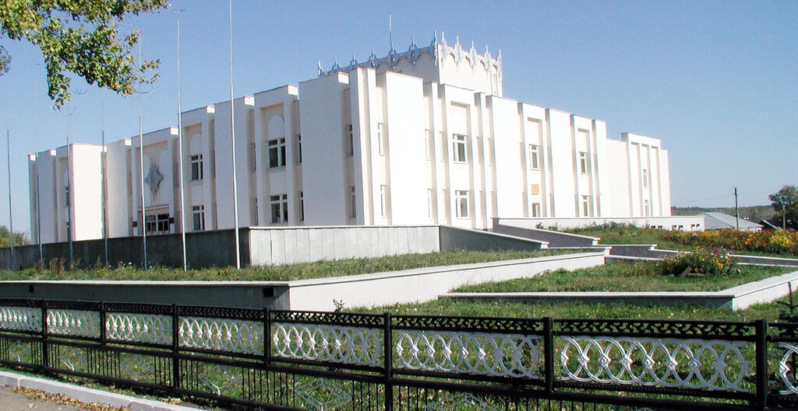
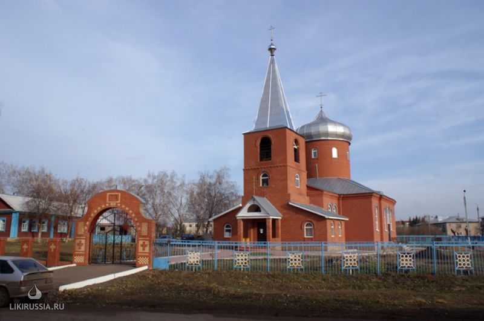
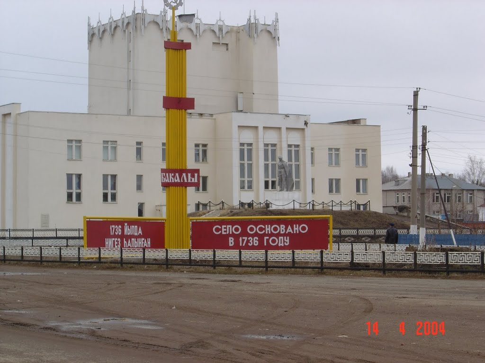
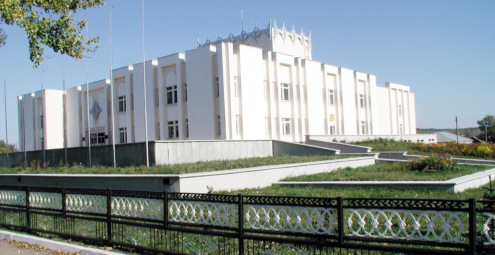
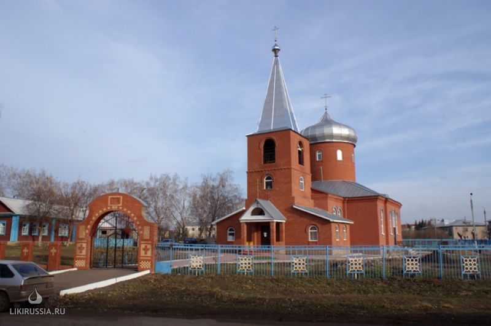
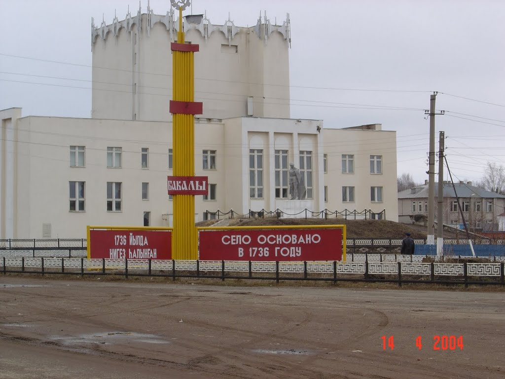

Бакалы́ (башк. Баҡалы) — село, административный центр Бакалинского района Республики Башкортостан, а также центр Бакалинского сельсовета. Расположено на западе республики на берегу реки Сюнь.
.png)
Бакалы́ (башк. Баҡалы) — село, административный центр Бакалинского района Республики Башкортостан, а также центр Бакалинского сельсовета. Расположено на западе республики на берегу реки Сюнь.
В февральские дни 1918 года район явился центром очередной крестьянской войны, штаб которого под названием «Чёрного орла» располагался в Бакалах. До Октябрьской революции район являлся волостью в составе Белебеевского уезда Уфимской губернии. В 1918—1924 годы в Бакалинский район входило 9 волостей, в том числе Илишевский, Шаранский. Затем до 1930 года Бакалы назывались Бакалинская волость Белебеевского кантона Башкирской АССР. Бакалинский район был образован 20 августа 1930 г. согласно Постановлению Президиума Всесоюзного Центрального исполнительного Комитета (ВЦИК) СССР. В тридцатые годы ещё было очень много ручного труда. На тракторы, машины-полуторки смотрели как на диковинку, но люди, не жалея сил, работали. На средства, вырученные от продажи сельхозпродукции, приобретали технику. Строились первые клубы, детские сады и ясли, появилось радио. В 1933 г. начали готовить кадры для сельского хозяйства. Первые ростки коллективного хозяйствования появились в районе в 1923 г. В тот год на территории Бугабашевского сельсовета возникли две маленькие коммуны — «Сознание» и им. Кольцова. В 1925 г., объединившись, они приобрели в кредит трактор «Фордзон», который был единственным в районе до создания МТС. В 1930 г. уже существовало 15 колхозов. Весной 1932 г. была организована МТС. Она объединяла 30 колхозов с посевной площадью более 20 тыс. га земли В 1933 г. в районе состоялся первый слёт ударников-колхозников. Активное участие приняли бакалинцы в Великой Отечественной войне 1941—1945 годов, где потеряли более 5 тысяч своих славных сыновей и дочерей (всего ушло на фронт более 12 тыс. человек). Горько перелистывать страницы истории Великой Отечественной войны — слишком огромны и невосполнимы человеческие потери. Бакалинский район направил около 16,5 тыс. своих сыновей на фронты Великой Отечественной войны. Оставшиеся, в основном женщины и старики, трудились в тылу для победы на фронте. Около 6 тысяч земляков не вернулись с полей сражений. Они воевали храбро, о чём свидетельствуют награды. Шесть Героев Советского Союза: Файзулла Хазиевич Аглетдинов, Афанасий Георгиевич Карманов, Талип Латыпович Нуркаев, Михаил Петрович Петров, Михаил Анисимович Соколов, Василий Ильич Утин — дала бакалинская земля. Полными кавалерами ордена Славы вернулись с фронтов Яков Дмитриевич Костин, Степан Сергеевич Туснолобов, Василий Михайлович Варфоломеев, Виктор Никифорович Зотов. В годы второй мировой войны прославили наш район организатор и руководитель партизанского движения, герой Чехословакии Даян Баянович Мурзин, национальный герой Польши Александр Васильевич Кузнецов. Более 5 тысяч человек были награждены орденами и медалями.
Сегодня в память о беспримерном подвиге воинов самые красивые улицы Бакалов называются их именами. В честь бакалинцев, павших в боях за свободу и независимость Родины, в районном центре Бакалы и других населённых пунктах воздвигнуты обелиски и памятники. Боевые традиции продолжают молодые. Более 300 земляков исполнили воинский долг в Афганистане и Чеченской Республике. 11 ребят не вернулись в родные дома живыми. В 50-е годы загорелись «лампочки Ильича». В 5 км от Бакалов на реке Сюнь силами восьми колхозов была построена гидроэлектростанция мощностью 105 КВт. Свет появился в домах, а затем электричество начали применять в колхозном производстве. 960-е годы начал активно развиваться строительный комплекс. Не только в райцентре, но и в других населенных пунктах появились типовые школы, детские сады, благоустроенные особняки. В 1970-е годы за одну пятилетку выполнялись задания двух. Так, птичницы колхоза «Совет» В. Бикбова, Р. Саватеева, Е. Исавлина, Т. Измайлова под руководством И. А. Селиванова ли на заготовительный пункт 2 млн. 910 тыс. яиц при плане 1 млн. 450 тыс. Самые достойные труженики представляли район на съездах, получали награды ВДНХ. В августе 1970 г. был торжественно открыт мост через реку Сюнь в Бакалах. Последние двадцать пять лет в районе усиленными темпами велось строительство. В райцентре появилось множество двухэтажных домов и зданий. Был открыт Дворец культуры. Важнейшим достоянием бакалинцев стали газификация района, асфальтирование дорог, широкий размах строительства индивидуального жилья. Не уменьшилось с годами число знатных хлеборобов, животноводов, мастеров во многих сферах производства[3].
В селе работают две средние школы, агролицей, коррекционная школа-интернат для слабослышащих детей , детская школа искусств, три детских сада, детско-юношеский клуб физической подготовки, центральная районная больница, два дома культуры, национально-культурный центр «Кряшен», центральная и детская библиотеки, музей, церковь, мечеть, автостанция. Расположены кирпичный завод, лесхоз, сыродельный завод, асфальтный завод и другие предприятия.
.jpg) 




